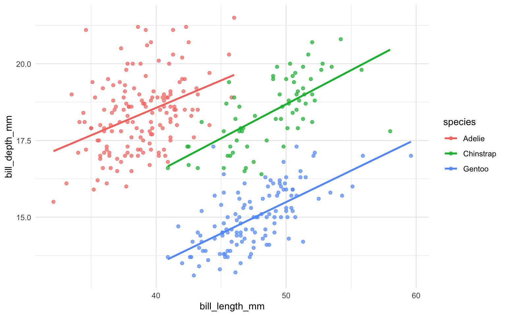

library(tidyverse)
library(palmerpenguins)
penguins |>
group_by(species) |>
summarize(
count = n(),
mean_bill_length = mean(bill_length_mm, na.rm = TRUE),
mean_body_mass = mean(body_mass_g, na.rm = TRUE)
)22 Basics of Quarto
What You’ll Learn Today
- The Quarto Setup: Learn about the key parts of a Quarto document.
- Mixing Text, Code, Visuals & Equations: See how you can combine explanations, code, and mathematical formulas in one neat file.
-
Making Reproducible Reports
22.1 What’s Quarto All About?
Imagine a tool that lets you write your story and run your code at the same time. That’s Quarto for you! It’s like R Markdown on steroids—it works with R, Python, Julia, and more, and lets you output to HTML, PDF, Word, presentations, and even websites.
Why should you care?
Because Quarto keeps your analysis, visualizations, and text all in one place. This means anyone can re-run your report and see exactly the same results—making your work truly reproducible and shareable.
22.2 Getting Started with a Quarto Document
A typical Quarto file has two parts:
-
YAML Header:
This is where you set up your document’s settings—think title, author, format, and more. -
Document Body:
Here’s where you mix regular text, code, cool visuals, and even equations!
22.2.1 The YAML Header
The header sits at the very top and is surrounded by three dashes. Here’s a simple example:
---
title: "My First Quarto Document"
author: "Your Name"
format: html
---In this section, you tell Quarto:
- Which format you’re aiming for (HTML, PDF, etc.)
- What your document’s title, author, and date are
- What style or theme you’d like to use
- And even settings for your table of contents!
22.2.2 Writing with Markdown
In the body of your document, you write in Markdown—a simple way to format your text. For example:
# Level 1 Heading
## Level 2 Heading
This is your regular paragraph text. You can make text **bold** or *italic*.
- Bullet point one
- Bullet point two
- Nested bullet
1. First numbered item
2. Second numbered item
> This is a blockquote that highlights something cool.
[Check out Quarto](https://quarto.org)Markdown makes it super easy to structure your document without any fuss.
22.3 Mixing in Some Code: Code Chunks
Now, the magic happens when you include code chunks. These let you run code and show the results directly in your document.
22.3.1 How to Add a Code Chunk
Here’s a basic example in R:
This code chunk groups the penguins dataset by species and summarizes key stats. Notice the #| options—these let you control what shows up in your final document.
22.3.2 Customizing Your Code Chunks
You can tweak each chunk with options like:
- echo: false – Run the code, but hide it.
- eval: false – Show the code without running it.
- warning: false – Skip those pesky warning messages.
- message: false – Keep it clean by hiding messages.
- fig-width / fig-height – Set your figure dimensions.
These options can be set per chunk or globally in your YAML header.
22.4 Adding Figures and Tables
22.4.1 Including Figures
It’s super simple to add plots. Just write the code for your plot in a code chunk, and Quarto will display it in your document.
#| label: penguin-plot
#| fig-cap: "Bill length vs. bill depth by species"
#| fig-width: 8
#| fig-height: 5
#| warning: false
ggplot(penguins, aes(x = bill_length_mm, y = bill_depth_mm, color = species)) +
geom_point(alpha = 0.7) +
geom_smooth(method = "lm", se = FALSE) +
theme_minimal()
This chunk adds a neat caption and custom dimensions for the plot.
22.4.2 Creating Tables
You can easily turn a tibble into a table in your document with knitr::kabel(). Here’s an example:
penguins |>
group_by(species) |>
summarise(
number = n(),
mean_bill_length = mean(bill_length_mm, na.rm = TRUE),
) |>
knitr::kable()| species | number | mean_bill_length |
|---|---|---|
| Adelie | 152 | 38.79139 |
| Chinstrap | 68 | 48.83382 |
| Gentoo | 124 | 47.50488 |
Quarto can also display stunning tables. In R, there is a package called gt (Grammar of Tables) that makes it easy to create and style tables. Here’s an example:
| Penguins in the Palmer Archipelago | ||||||||
|---|---|---|---|---|---|---|---|---|
| Data is courtesy of the {palmerpenguins} R package | ||||||||
Adelie
|
Na |
Chinstrap
|
Gentoo
|
|||||
| Female | Male | Female | Male | Female | Male | Na | ||
| Island: Biscoe | ||||||||
| 2007 | 5 | 5 | - | - | - | 16 | 17 | 1 |
| 2008 | 9 | 9 | - | - | - | 22 | 23 | 1 |
| 2009 | 8 | 8 | - | - | - | 20 | 21 | 3 |
| Island: Dream | ||||||||
| 2007 | 9 | 10 | 1 | 13 | 13 | - | - | - |
| 2008 | 8 | 8 | - | 9 | 9 | - | - | - |
| 2009 | 10 | 10 | - | 12 | 12 | - | - | - |
| Island: Torgersen | ||||||||
| 2007 | 8 | 7 | 5 | - | - | - | - | - |
| 2008 | 8 | 8 | - | - | - | - | - | - |
| 2009 | 8 | 8 | - | - | - | - | - | - |
Check the official document and tutorial for how to creat tables with gt.